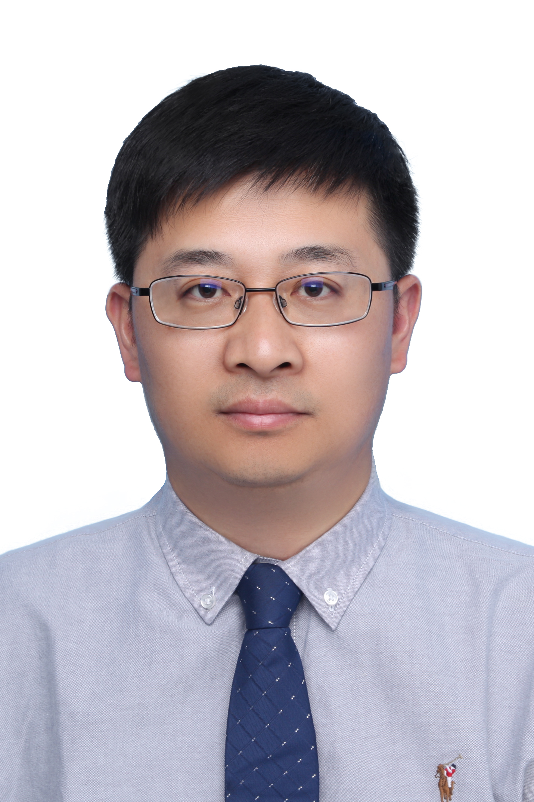

Founding Director

Jun Xu, PhD
Jun Xu, PhD. is the Professor and Vice Dean of the Institute for AI in Medicine, School of Artificial Intelligence/School of Future Technology at Nanjing University of Information Science and Technology. He received his Ph.D. degree from the Department of Control Science and Engineering at Zhejiang University in 2007. Dr. Xu had been a postdoctoral researcher and visiting professor at Rutgers University and Case Western Reserve University in USA. His research interests are computational pathology; medical image analysis; computer-aided prevention, diagnosis, prognosis, and treatment of disease; multi-modality medical data analysis. The goal is the utility of these methods in studying (a) disease identification and sub-typing, (b) disease quantification and characterization, (c) prediction of prognosis and treatment response.
Faculty
Graduate students
 |
 |
 |
| Cong Liu, Msc |
Jineng Han, Msc |
Li Yu, Msc |
 |
 |
 |
| Xiaofeng Xu, Msc |
Wei Gao, Msc |
Jingkai Zhanng, Msc |
 |
 |
 |
| Ziang Li, Msc |
Peng Cao, Msc |
Lei Yuan, Msc |
Alumni
 |
 |
 |
| Qian Zhang, Msc |
Xiaofei Luo, Msc |
Lei Gong, Msc |
 |
 |
 |
| Chao Zhou, Msc |
Bing Lang, Msc |
Mingjian Sun, Msc |
 |
 |
 |
| Weiping Ji, Phd |
Dongmei Cao, Msc |
Lihui Liu, Msc |
 |
 |
 |
| Chaoyang Yan, Msc |
Jiawei Xie, Msc |
Baoming Li, Msc |
 |
 |
 |
| Zengrui Zhao, Msc |
Wei Ma, Msc |
Haijun Xu, Msc |
 |
 |
 |
| Chunyan Xu, Msc |
Song Gu, Msc |
Lei Wang, Msc |
 |
| Quan Wang, Msc |